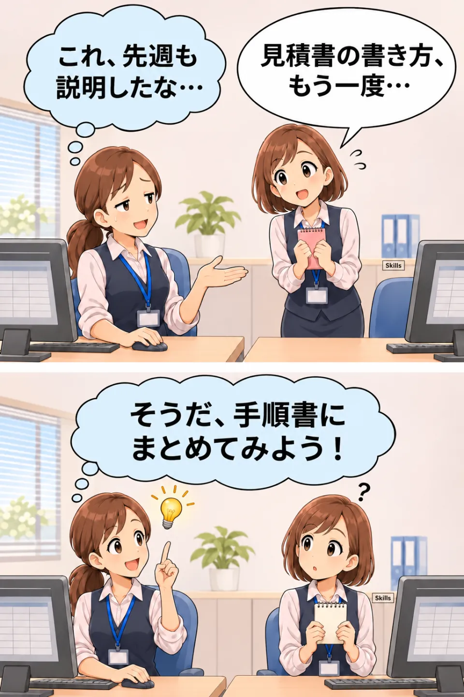
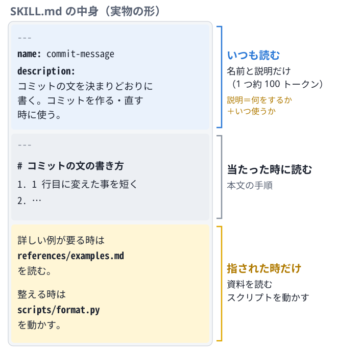
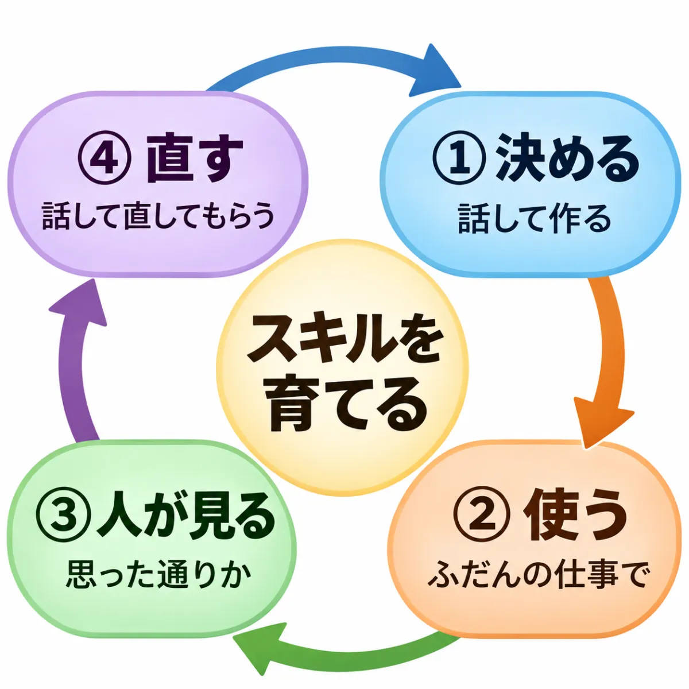
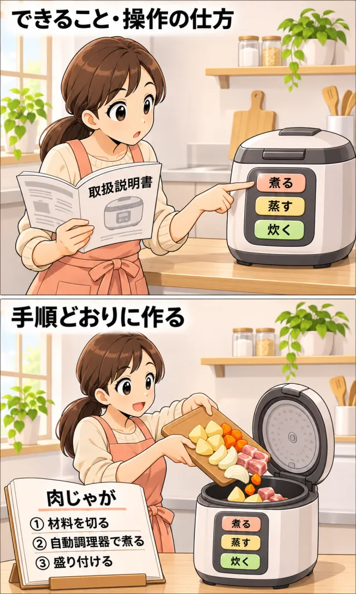
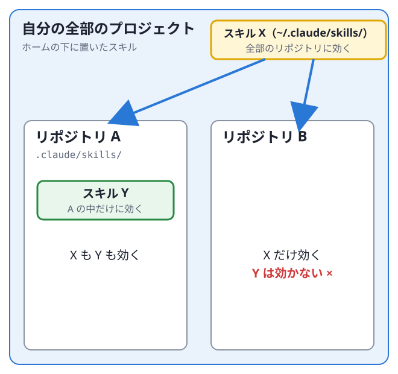

導入
スキル入門
必要になった時に、その手順だけ読む
この資料で分かること
スキルとは何か、その中身
ちゃんと呼ばれるような決め方
話して作って、育てる進め方
出典：Anthropic・Claude Code・Agent Skills の公式ドキュメント
導入｜なぜ要るのか
同じ手順を、毎回指示し直していませんか？
■ よくある困りごと
書式・手順・社内の決まりを、頼むたびに指示し直す
指示が 1 つ抜けると、出来がばらつく
手順をまとめておけば、毎回言わなくていい

出典：Anthropic「Agent Skills」・公式ガイド
導入｜スキルとは
必要な時だけ読む SKILL.md
■ 読む順
いつも
：名前と説明だけ（1 つ約 100 トークン）
頼みに当たったら
：本文の手順
本文が指した時だけ
：資料を読む・スクリプトを動かす
たくさん入れても、文脈が埋まらない

出典：Anthropic「Agent Skills」・agentskills.io の仕様
展開｜呼ばれ方
ちゃんと呼ばれるように決める
■ 決める 2 つ
description に、
何をするか
・
いつ使うか
いつも読む所（CLAUDE.md・手順）から「この時はこのスキル」と指す
■ Vercel の試験（新しい API を使えるか）
置き方
合格率
スキルを置いただけ（56% の件で呼ばれず）
53%
スキル＋「使え」と指示
79%
いつも読む所に資料の索引
100%
出典：Anthropic のドキュメント・Vercel ブログ（2026-01-27）
展開｜作り方
話すだけで作れる——
気軽に作って、気軽に使おう
■ 作る
スキルを作るスキル（skill-creator）がある
「こういうスキルを作って」と話すだけで決まる
■ 使う
公開されているスキルも、気軽に入れてよい
入れる時は、中身にひと通り目を通す
出典：Anthropic の公開スキル集・Codex のドキュメント・Claude ブログ
展開｜育て方
使いながら育てる
■ 見るのは人
思った通りの答えが出たか
ずれていたら、話して直してもらう
フィードバックするのは、人

出典：Anthropic 公式ガイド・agentskills.io
まとめ
覚えて帰る 3 つ
1
スキルは、必要な時だけ読む SKILL.md
いつも読むのは、名前と説明だけ
2
呼ばれるように、セットで決める
description と、まわりの指示（CLAUDE.md・手順）
3
話して作って、使いながら人が育てる
フィードバックするのは、人
おまけ｜違い
MCP とスキルは、セットで使う
■ MCP——取扱説明書
道具で何ができるか・どう動かすか
■ スキル——レシピ
何を、どの順で作るか
■ CLAUDE.md
いつも守る事（毎回必ず読む）
道具の使い方と、作り方の手順はセット

出典：Anthropic 公式ガイド・Claude Code のドキュメント
おまけ｜置き場所
置き場所で、
効く範囲が変わる
■ ホームの下
自分の全部のプロジェクトに効く
■ リポジトリの下
そのリポジトリだけに効く
■ プラグイン
入れた人みんなに効く
claude.ai・API・Claude Code の間では同期しない

出典：Claude Code のドキュメント・Anthropic のドキュメント（Claude Code の場合）